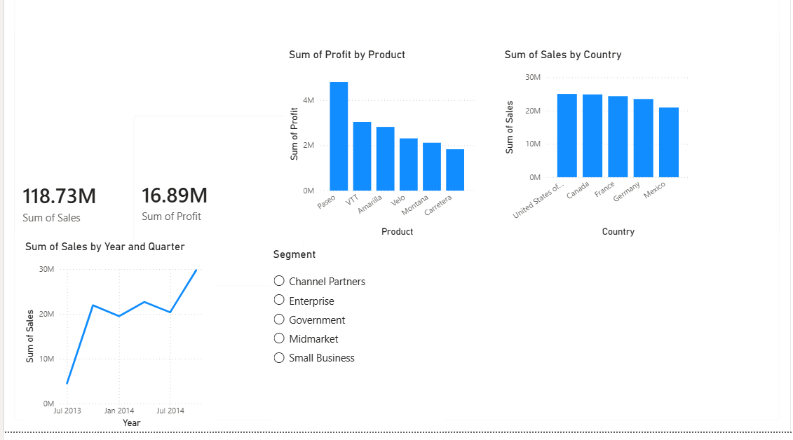
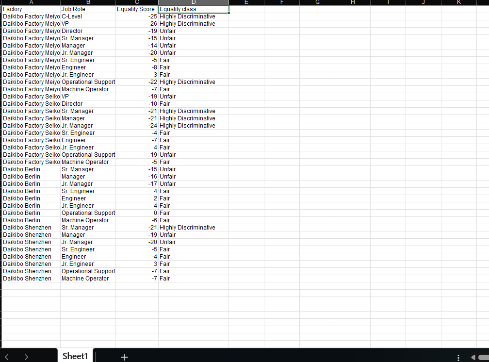

Aspiring Data Analyst | SQL • Power BI • Excel
I'm a self-taught data analyst based in South Africa, building practical skills through hands-on projects in SQL, Power BI, and Excel. I completed the Excel Fundamentals for Data Analysis certification (Macquarie University), and I'm currently working through the Google Data Analytics Professional Certificate.
Restored the AdventureWorks database in SQL Server, built a data model, and designed an interactive Power BI dashboard visualizing sales trends and key metrics using DAX measures.

Built an equality scoring table analyzing pay fairness across job roles and factory locations, calculating equality scores and flagging highly discriminatory, unfair, and fair pay bands.

Email: tumelomokhele.17@gmail.com
LinkedIn: Add your LinkedIn URL here